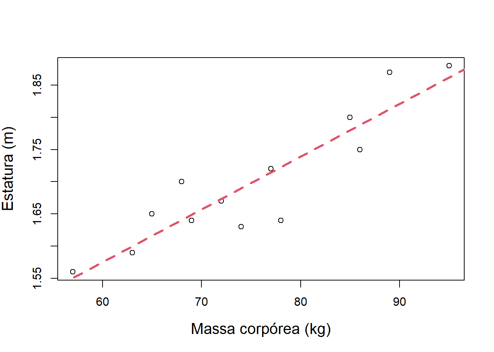
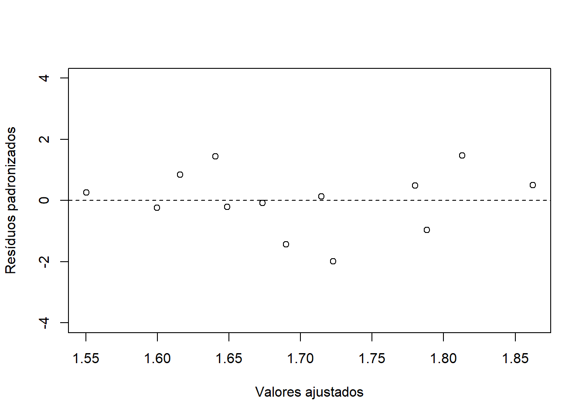
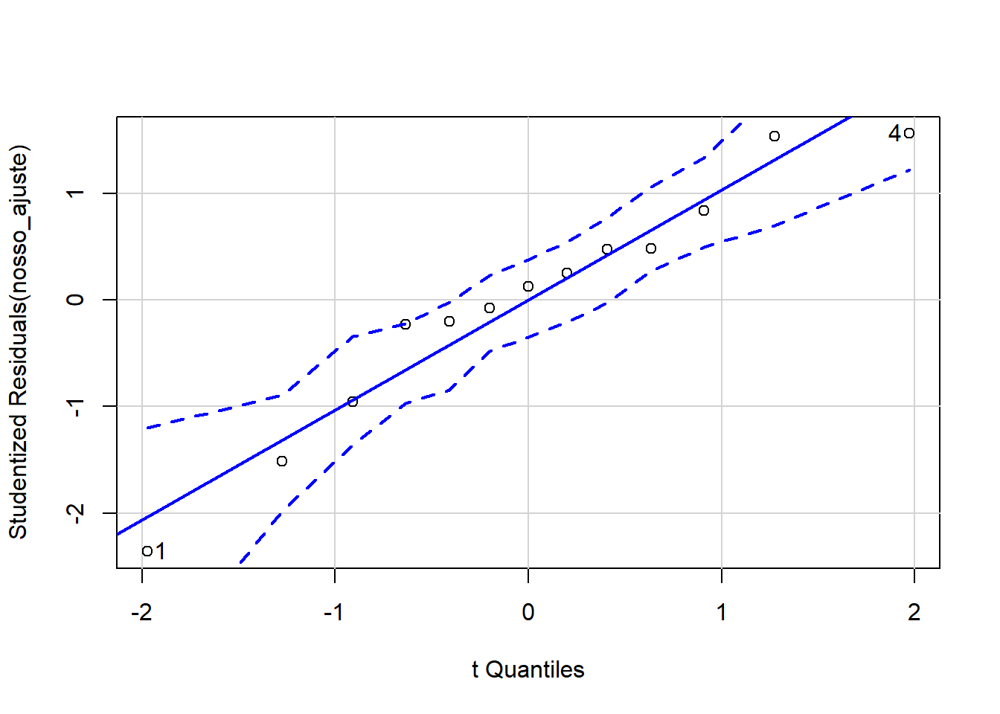
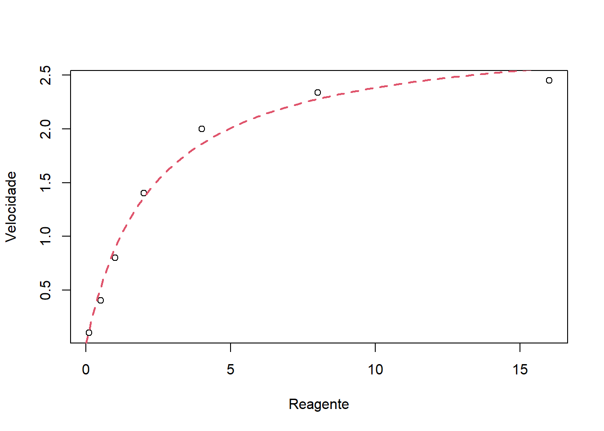

Chapter7 Prática Computacional
7.1 Ajuste de reta
Os dados do exemplo 1 já estão gravados na memória do computador. Vamos gerar um ajuste linear:
- O ajuste é gerado com a função
lm, o resultado é analisado a partir do comandosummarye o gráfico é plotado com os comandosplotecoef, que nos dá os coeficientes do modelo ajustado.
- O ajuste é gerado com a função
nosso_ajuste <- lm(altura ~ peso)
summary(nosso_ajuste)##
## Call:
## lm(formula = altura ~ peso)
##
## Residuals:
## Min 1Q Median 3Q Max
## -0.082732 -0.009601 0.005477 0.019807 0.059356
##
## Coefficients:
## Estimate Std. Error t value Pr(>|t|)
## (Intercept) 1.082448 0.085626 12.642 6.80e-08 ***
## peso 0.008209 0.001127 7.285 1.57e-05 ***
## ---
## Signif. codes: 0 '***' 0.001 '**' 0.01 '*' 0.05 '.' 0.1 ' ' 1
##
## Residual standard error: 0.04353 on 11 degrees of freedom
## Multiple R-squared: 0.8283, Adjusted R-squared: 0.8127
## F-statistic: 53.07 on 1 and 11 DF, p-value: 1.573e-05plot(peso, altura, xlab = "Massa corpórea (kg)", ylab = "Estatura (m)", cex.lab=1.3)
abline(coef(nosso_ajuste), col = 2, lwd = 3, lty = 2)
- Mas este comando corresponde à qual equação? Usamos o pacote
equatiomaticpara saber a equação!
# Install.packages("equatiomatic")
library(equatiomatic)## Warning: package 'equatiomatic' was built under R version 4.1.2extract_eq(nosso_ajuste)\[ \operatorname{altura} = \alpha + \beta_{1}(\operatorname{peso}) + \epsilon \]
- Ok! Mas como obter os valores preditos a partir da fórmula?
extract_eq(nosso_ajuste, wrap = TRUE, use_coefs = TRUE)\[ \begin{aligned} \operatorname{\widehat{altura}} &= 1.08 + 0.01(\operatorname{peso}) \end{aligned} \]
- E vocês sabiam que dá para fazer ANOVA para o ajuste de curvas?
anova(nosso_ajuste)## Analysis of Variance Table
##
## Response: altura
## Df Sum Sq Mean Sq F value Pr(>F)
## peso 1 0.100557 0.100557 53.071 1.573e-05 ***
## Residuals 11 0.020843 0.001895
## ---
## Signif. codes: 0 '***' 0.001 '**' 0.01 '*' 0.05 '.' 0.1 ' ' 1- E será que o ajuste ficou bom? Vamos olhar para o coeficiente de determinação.
summary( nosso_ajuste )$r.squared## [1] 0.8283142Ok! A variável
massa corporalexplica 82,8% da variação observada na variávelestatura.Será que os pontos são “bem explicados” pela reta. Vamos olhar os resíduos.
Independência e tendências não capturadas pelo modelo
plot(fitted(nosso_ajuste), rstandard(nosso_ajuste),
ylab = "Resíduos padronizados", xlab = "Valores ajustados", ylim = c(-4, 4)) + abline(h = 0, lty =2)
## integer(0)- Gráfico Quantil-Quantil
# install.packages("car")
library(car)## Carregando pacotes exigidos: carDataqqPlot(nosso_ajuste)
## [1] 1 47.2 Ajuste não-linear
Nesse caso, o comando
lmjá não funciona mais. Vou explicar melhor adiante!Vamos usar o procedimento iterativo (Gauss-Newton) de estimação do pacote
nls
michaelis_fit <- nls( y ~ a*x / (b + x) , data = df2,
start = list(a = 4, b = 4) )Nesse caso,
aebsão valores desconhecidos - parâmetrosFoi necessário chutar valores iniciais para obter o ajuste
O resumo do ajuste é dado por:
summary( michaelis_fit ) ##
## Formula: y ~ a * x/(b + x)
##
## Parameters:
## Estimate Std. Error t value Pr(>|t|)
## a 2.9318 0.1432 20.481 5.14e-06 ***
## b 2.2936 0.3431 6.686 0.00113 **
## ---
## Signif. codes: 0 '***' 0.001 '**' 0.01 '*' 0.05 '.' 0.1 ' ' 1
##
## Residual standard error: 0.1103 on 5 degrees of freedom
##
## Number of iterations to convergence: 6
## Achieved convergence tolerance: 4.491e-06- O resultado do ajuste foi:
plot(x, y, xlab = "Reagente", ylab = "Velocidade")
z <- seq(0, 16, by = 0.1)
y_fit <- predict(michaelis_fit, newdata = data.frame(x = z), type = "response")
lines(z , y_fit, lwd =2, col = 2, lty = 2)